ACADEMICS
Degrees Received

2022 - Present
Bachelors in Electrical Engineering
üèÜ IOE Merit-Based Scholarship Recipient
Institute of Engineering-Pashchimanchal Campus

2020 - 2022
Higher Secondary Education (Science)
üèÜ Academic Excellence Scholarship Recipient
SOS Hermann Gmeiner Higher Secondary School
Professional Certifications

Deep Learning AI
Andrew Ng

Adaptive Neuro Fuzzy Inference System
Watlab

Python ML
Udemy
Control Systems
Matlab

Electrical Panel Design
Autocad Electrical

Power System Design
Power World Simulator


 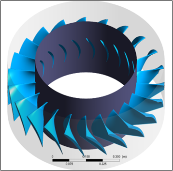
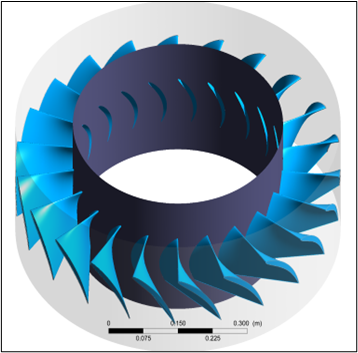
 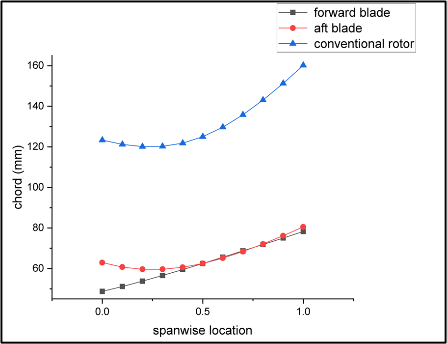
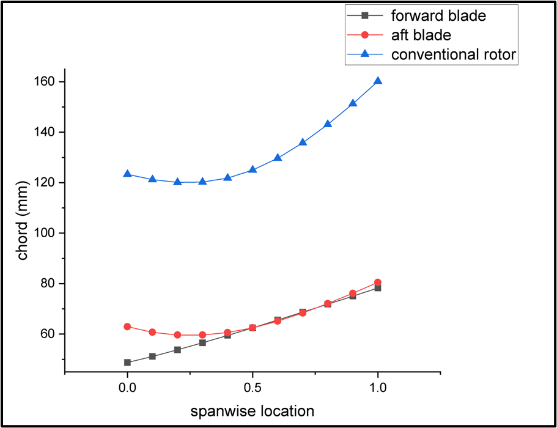


 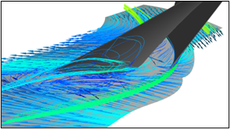
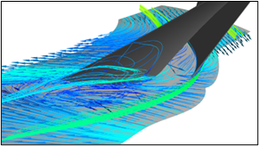

 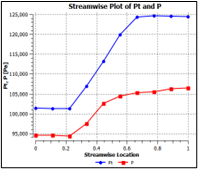
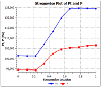


 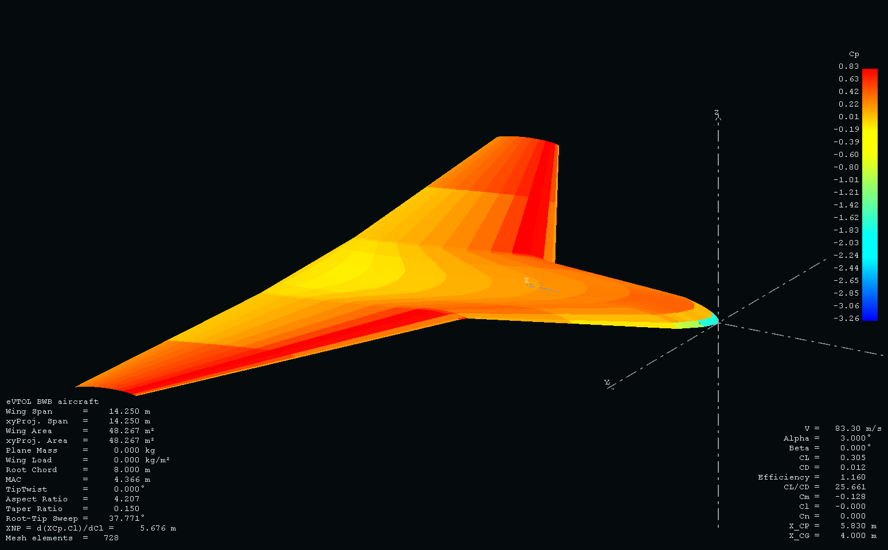
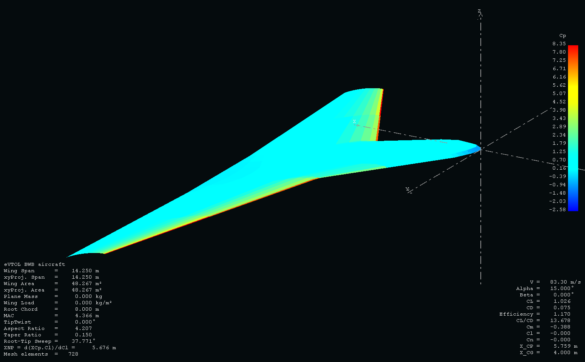
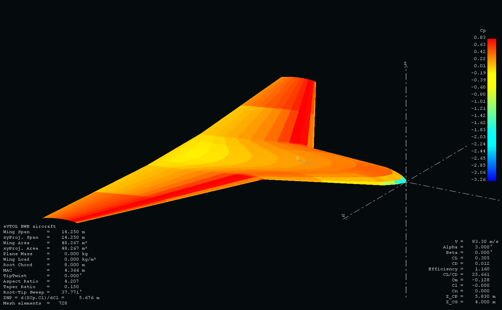
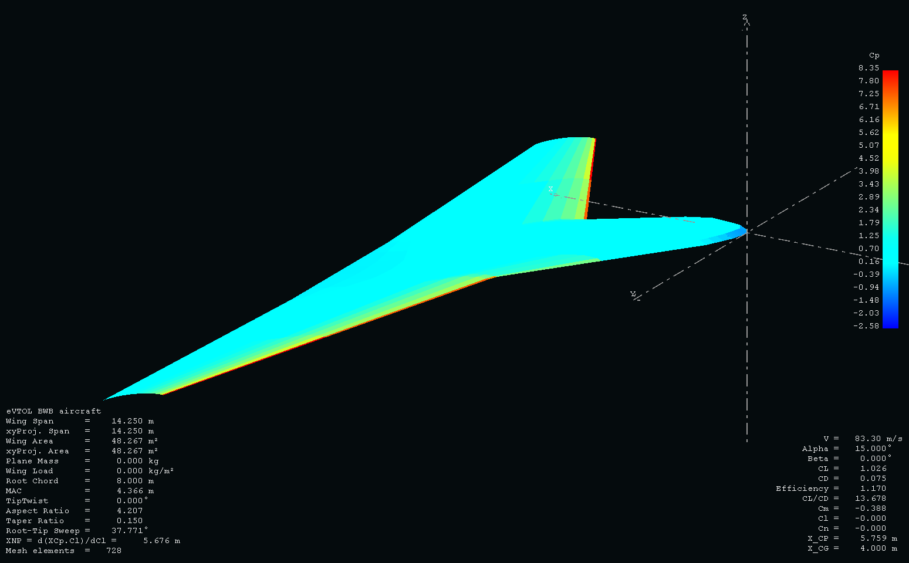


 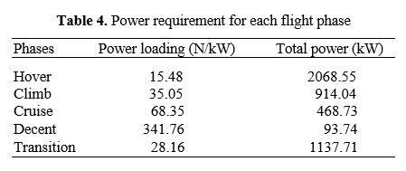
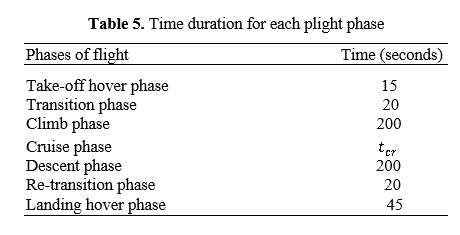
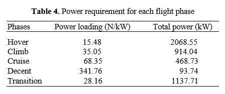
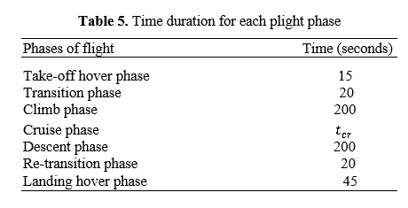


 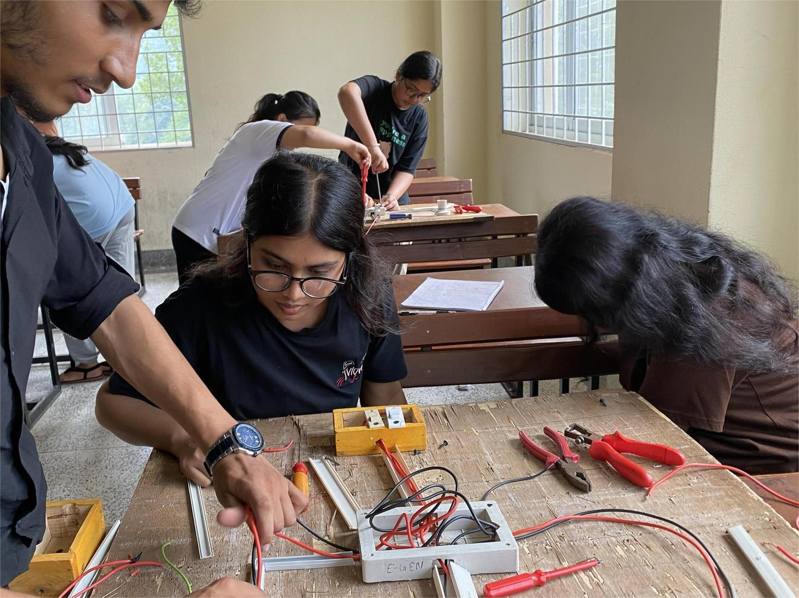
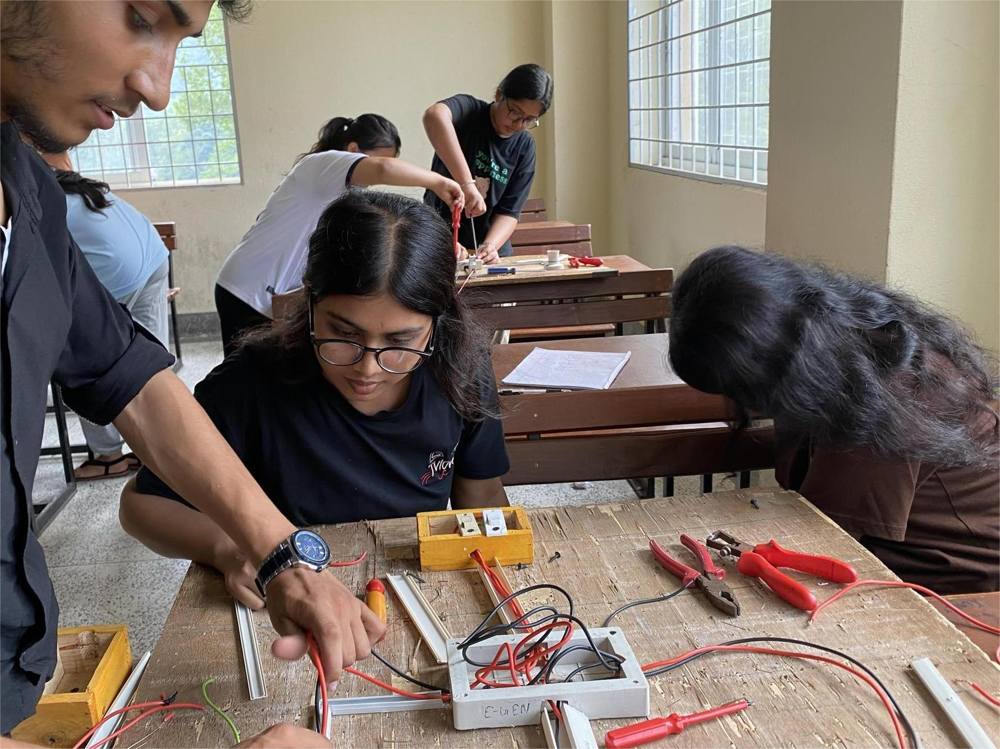